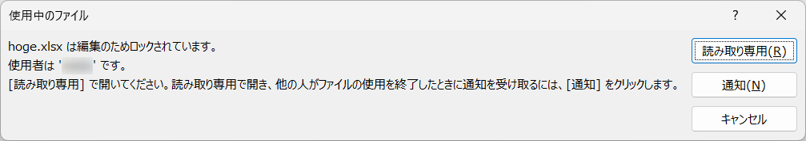
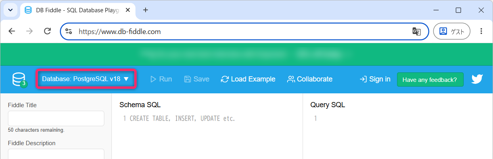
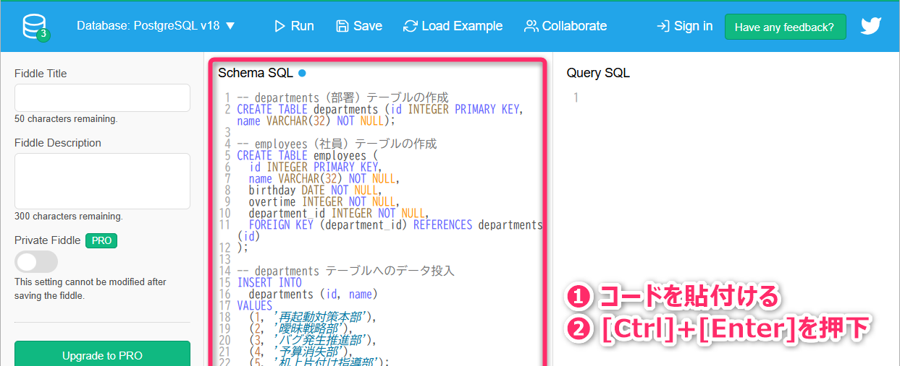
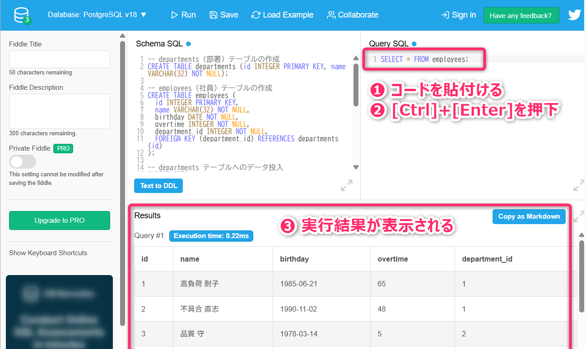
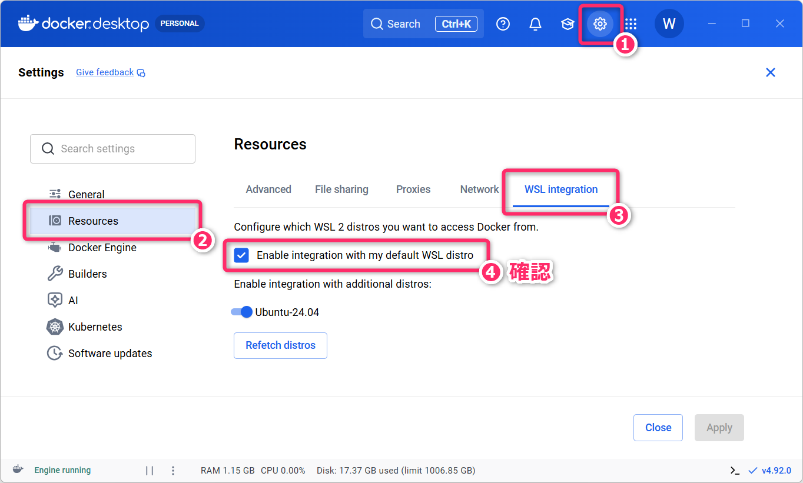
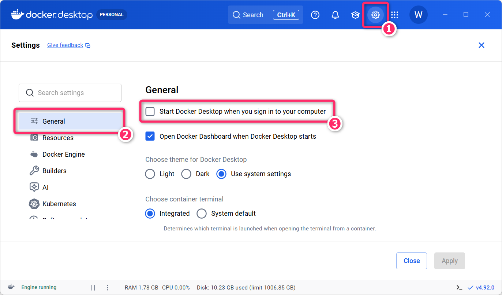

1 ガイダンス
1.1 概要
本科目では「リレーショナルデータベース」について、その概念から保守運用に至るまでを体系的に学んでいきます。
具体的には、環境構築 (Docker での PostgreSQL コンテナ構築)、設計 (概念設計・論理設計)、操作 (Raw SQL/ORM)、保守運用 について、ハンズオン形式で (＝実際に手を動かしながら) 学んでいきます。また「ドキュメント指向データベース」についても、基本概念や環境構築、操作などの概要を学んでいきます。
- リレーショナルデータベースについては PostgreSQL
を使用します。
- 昨年度の「プログラミング3」の講義で利用した Supabase も、中核データベースとして PostgreSQL を採用しています。
- ドキュメント指向データベースについては MongoDB を使用します。
具体的には、次のような「知識・理解」および「実践的スキル」を習得することを目標に学んでいきます。
- データの永続化や管理における データベースマネジメントシステム (DBMS) の位置付けと、その導入効果を説明できる。
- 主要なデータベースモデル（リレーショナル／ドキュメント指向など）の特性を理解し、要件に応じた適切な選択や組み合わせができる。
- Docker を使用して PostgreSQL の実行環境を構築し、コンソール や DbGate (ウェブベースのデータベースクライアント) から接続して、SQL や ユーティリティコマンド を実行できる。
- 現実世界の要件を分析し、ER図を用いた概念設計ができる。
- リレーショナルモデルについて、正規化や外部キー制約などの論理設計と、インデックス設計ができる。
- SQL を用いてリレーショナルデータベースに対する各種クエリが実行できる。
- TypeScript から、pg（DBドライバ）や Prisma・Drizzle（ORM）を用いて PostgreSQL に接続し、データの保存・取得・更新などができる。
- Docker を使用して MongoDB の実行環境が構築できる。
- TypeScript から MongoDB に接続して基本的な CRUD 操作ができる。
プロンプト例 (意味や理解が曖昧な事項は生成AIを使って、再確認しておきましょう)
ソフトウェア開発の文脈で「データの永続化」ってどういう意味ですか。
Docker ってなに？「Docker を使用して PostgreSQL の実行環境を構築できるように」っていわれたんですけど。
ドキュメント指向データベースとは、どのようなものですか。どのようなシステムで利用されることがありますか。
1.2 授業の位置づけ
この授業は、次のような位置付けになります。
1.2.1 基本情報
- 学年・学科： 4年 総合工学システム学科 知能情報コース の基盤専門科目
- 単位数： 2単位 (後期・学修単位)
- 卒業要件との対応： DP-D
- 自己の基盤となる専門分野について実践的な知識と技術を修得し、工学的諸問題に適用する能力
- 4年生科目のシラバス (本校HP)
学修単位科目は、大学の授業設計と同様に「30時間 (相当) の対面授業」と「60時間 (相当) の授業時間外学習」を前提とする内容 (学習量と難易度) で構成されています。
つまり、標準的には、授業1回あたり4時間程度の授業時間外学習 (ここまでの学習状況や理解度による個人差があり) が必要な内容となっています。
1.2.2 関連科目
「リレーショナルデータベース」については、これまでの授業や実験実習でも断片的に学習してきました。本科目ではこれを体系的に学習していきます。
- 2年 前期 (学修単位)「情報2」
- 教科書「キタミ式 ITパスポート」の「Chapter7 データベース」。
- 第10回と第11回の講義で「リレーショナルデータベースの基礎」について学習済み。
- 2年 通年 (履修単位)「プログラミング1」
- 3年 後期 (学修単位)「プログラミング3」
- ウェブアプリのデータの永続化 …Prisma (TypeScript ORM) + Supabase (PostgreSQL)
- 3年 後期「知能情報実験実習1」
- 後期テーマ：サーバ構築 (Linux, Apache)、Docker
- 4年 前期「知能情報実験実習2」
- 前期テーマ1：Prisma (TypeScript ORM) + SQLite3 資料
- 前期テーマ2：SQLAlchemy (Python ORM) + SQLite3
これまでに培ってきた知識や技術と、本科目で新たに学ぶ内容を「どのように結びつけることができるのか？」を強く意識し、取り組んでください。
この他、データベース (特に「リレーショナルデータベース」の概念) は「ITパスポート試験」「基本情報技術者試験」「応用情報技術者試験」などの各種資格試験において、知識として問われる内容となっています。
これらはいずれも「国家資格」です。実践的な開発力とは必ずしも直結しないものの 就職活動を含めたIT業界におけるキャリア形成 では一定の意義を持つので、就活や就職後のキャリアアップなどに備えて取得をお勧めします。
1.2.3 教科書と参考書
教科書「SQL 第2版 ゼロからはじめるデータベース操作」については、主に授業時間外学習で使用します。
その他、「おすすめの参考書」は以下の通りです。
- 改訂第4版 すらすらと手が動くようになる SQL書き方ドリル (初学者向け)
- データベースをなぜつくるのか 知っておきたいE-R図とSQLの基礎 (初学者向け)
- 達人に学ぶDB設計 徹底指南書 (第2版) (中級者以上)
- 失敗から学ぶRDBの正しい歩き方 (中級者以上)
いずれも、研究室に所蔵しているので、購入前に内容 (レベル感) を確認したいときは声をかけてください。
1.3 成績評価法と履修上の注意
総合成績（年度末の最終成績）は、シラバス記載のように「試験 45%、小テスト 35%、課題 20% の割合で総合して評価」します。
- 小テストは、主に講義資料内の「定着確認」から出題します (そのままではなく類題や解答形式の変更を含みます)。小テストは 授業開始直後に実施するので、余裕をもって教室に入るようにしてください。
小テストを受験できなかった場合の救済措置 (重要🚨)
遅刻や欠席 (交通障害・公欠・忌引き・出席停止など理由を問わない) により、小テストを受験できず追試験を希望する者は、当該授業日を含めて2日以内に学生から和田宛に TeamsChat (≠電子メール) で追試験の実施依頼 をしてください。例えば、「10月7日 (水) に実施された小テスト」の追試験を希望する場合は、10月8日 (木) の 23:59 までに連絡してください。
- 小テストの追試験は、理由に関わらず 1人あたり最大4回まで対応 します。5回目以降の小テストの追試は実施せず「0点」で評価します。
- Teams による実施依頼には、具体的な希望の日時
(原則として次回授業日の前日までの平日の昼休み、14:50 ～ 17:00 の時間帯)
を3案ほど添えてください。
- 「放課後」や「先生の空いている時間」のような抽象表現は避けて下さい。
- 指定期日までに指定の方法で連絡がない場合、追試験には対応しません。感染症等により登校再開日が未定で希望日時を挙げられない場合であっても、追試験を希望する旨および登校再開日が未定である旨を明記のうえ、期限内に連絡してください。また、登校再開日が判明した時点から2日以内に、改めて日程調整の連絡を自分から送ってください。
1.3.1 科目履修上の注意点
- 毎回、十分に充電した「ノートPC」を持参してください。
- 授業や課題の取り組みにおいて生成AIの利用に特段の制限はありませんが、これらは「自身の理解を深めるため」「知識の幅を広げるため」に利用してください。
- 大阪公立大学 生成AIの利活用に関する学生向けガイドライン (第2.0版) に示されるような「学問的誠実性に反するような利用」は禁止とします。
- 過年度の試験などは Teams の「一般」のチャンネルの「共有済み」のタブから確認してください。出題内容等は、参考程度に考えてください (大幅に変更される可能性があります)。
- ウェブの技術記事や YouTube 動画、生成 AI を活用し、授業で扱った内容に関する補足的な知識や、最近の技術動向についてキャッチアップに努めてください。
本科目は学修単位科目であり、各回の講義資料は、データベースを初めて学ぶ人であれば、6時間程度をかけて取り組むことを想定した分量・難易度となっています (特に第03回目以降)。資料の説明を眺めるだけでなく、実際に手を動かして演習に取り組み、不明な点を調べながら理解を深める時間も含んでいます。
授業内だけでなく、授業時間外の学習もしっかりと取り組んでください。
2 データベースとは
データベース (Database) とは、データ (data) と ベース (base) を合わせた「複合語」になります。データは「記録された情報」や「観測事実」を意味し、ベースは「基盤」「置き場」「土台」を意味します。また、ベースは軍事用語として 「基地」や「補給拠点」 といった意味合いも持っています。
このことから、データベースはもともと「情報の基盤」や「知識やデータの倉庫」のような比喩的イメージを持つ言葉となっています。
そのため、非情報分野においては、一般的に「データベース」という言葉は「一定の形式や構造に従って整理されたデータの集まり」を指します。その意味では、「電話帳」や「国語辞典」、「出席簿」といったアナログ資料もデータベースとみなせますし、CSV や JSON などのデジタルファイルもデータベースと呼ぶことができます。
コンピュータサイエンスやソフトウェア開発の分野でも、データベースの基本的な意味は「整理されたデータの集まり」です。ただし、実務では、データを管理するソフトウェアも含めた「データを蓄積・管理し、必要に応じて検索・更新・削除・集計・加工などを行う仕組み」を、まとめて「データベース」と呼ぶことが一般的です。
厳密に区別する場合は、整理されたデータの集まりを「データベース (DB)」、それらを管理するソフトウェアを「データベースマネジメントシステム (DBMS)」と呼びます (参考：データベースとDBMSの定義)。
まとめると、以下のようになります。
- 本科目では、CSV や JSON、Excel などのファイルを直接読み書きする方法と、DBMS
を利用する方法を区別して説明する。
- 単なる CSV の読み書き処理を「データベースから情報を取得して」のように表現すると大きな誤解を与える ので十分に注意してください。
- データの蓄積・管理、柔軟な操作を可能にする仕組みやソフトウェアのことを「データベース」あるいは「データベースマネジメントシステム
(データベース管理システム)」と呼ぶ。
- PostgreSQL などのサーバ型 DBMS には「ユーザごとのアクセス制御」「ネットワーク経由での利用」「データ整合性の維持」「障害時復旧」といった機能が備わっています。ただし、提供される機能は製品によって異なり、SQLite のように独立したサーバやユーザ管理機能を持たないものもあります。
- データベースは「DB」、データベースマネジメントシステムは「DBMS」という略語で使用される。
- DB について「デービー」という読み方も比較的広く使われています。
2.0.1 定着確認
- データベースが行うデータの操作について、「蓄積・管理」以外の例を3つ答えよ。
- 答え: 検索、更新、削除、集計、加工などから3つ
- データそのものと、それを管理する仕組みを区別する場合、「DB」と「DBMS」はそれぞれ何を指すか答えよ。
- 答え: DB はデータそのもの、DBMS はそれらを管理する仕組みやソフトウェアを指す。
- 次の説明は「適切である」か「適切ではない」か答えよ。
- 答え: 適切ではない
「データベース」という言葉が指すものは、非情報分野でもソフトウェア開発の分野でも常に同じであり、文脈によって使い分けられることはない。
- ソフトウェア開発の説明で、DBMS を使わずに CSVファイル
を読み込むだけの処理を「データベースから情報を取得する」と表現すると、どのような誤解を与えるか答えよ。
- 答え: 単なるファイルの読み込みではなく、DBMS を利用してデータを管理・取得していると受け取られるおそれがある。
- 次の説明は「適切である」か「適切ではない」か答えよ。
- 答え: 適切ではない
DBMS の役割はデータを保存することだけであり、ユーザーごとのアクセス制御や障害時復旧は、DBMS が標準的に備える機能には含まれない。
- DBMS とは何の略語か英語で答えよ。
- 答え: Database Management System
- DBMS の日本語での名称を答えよ。
- 答え: データベースマネジメントシステム、データベース管理システム
- PostgreSQLなどのサーバ型DBMSが備えている機能として「適切ではないもの」はどれか。該当するものを全て答えよ。
- ❶ ユーザーごとのアクセス制御
- ❷ ネットワーク経由での利用
- ❸ データ整合性の維持
- ❹ プログラムの自動作成
- ❺ 障害時復旧
- ❻ ウイルス対策
- 答え: ❹❻
- 一般に「DBMS とは見なされないもの」はどれか。該当するものを全て答えよ。
- ❶ SQLite3
- ❷ PostgreSQL
- ❸ Oracle Database
- ❹ Microsoft Excel
- ❺ Microsoft Access
- ❻ SQLAlchemy
- ➐ Pandas
- ❽ Prisma
- 答え: ❹❻➐❽
- 開発現場において「データベースのバージョンアップ」という表現が指しているものはどれか。最も適切なものを答えよ。
- ❶ データを最新情報に更新すること
- ❷ DBMS ソフトウェアを新しいバージョンに更新すること
- ❸ ファイル形式を変更すること
- ❹ データの量を増やすこと
- 答え: ❷
- 次の説明は「適切である」か「適切ではない」か答えよ。
- 答え: 適切ではない
非情報分野における広い意味においても「データベース」とは基本的に電子データを指すため、紙の電話帳や国語辞典はデータベースとは見なさない。
- 次の説明は「適切である」か「適切ではない」か答えよ。
- 答え: 適切である
非情報分野では、一定の形式や構造に従って整理された CSVファイル や JSONファイル も「データベース」と呼ぶことがある。
2.1 実際の開発現場における「データベース」という言葉の使われ方
データそのものを「DB」、それを管理するソフトウェアを「DBMS」と区別しましたが、実際の開発現場では、これらをまとめて「データベース」と呼ぶこともよくあります。
以下は、開発現場で聞かれる発言の例です。同じ「データベース」という言葉でも、データの保存先や構造、DBMSの動作や運用など、話題によってそれが指している対象は少しずつ異なります。
- 「この機能では、ユーザーの行動ログをデータベースに保存する必要がありますね」
- 「データベースのスキーマ設計はどうしますか？正規化は第3正規形まででよいでしょうか」
- 「データベースの応答が遅くなっています💦クエリのパフォーマンスを確認してください」
- 「データベース用ディスクの使用率が90%を超えました。ディスク拡張が必要です」
- 「来週末にデータベースのバージョンアップを予定しています」
- 「データベースのセキュリティパッチを適用する必要があります」
- 「性能要件：データベースの応答時間は平均100ms以下であること」
- 「システムの可用性を高めるために、データベースの冗長化を検討しています」
このあたりの使い分けは、本科目を学んでいくうちに自然につかめるようになっていってください。
3 なぜ、DBMS が利用されるのか？
企業の基幹システム (会計システム、人事システム、販売管理システムなど) や、ECサイトなどのウェブサービスでは、顧客情報や注文情報などを管理するために「DBMS」が広く利用されています。特に「複数のユーザやプログラムが同じデータを同時に参照・更新できること」「関連するデータの整合性を保ったまま更新できること」といった要件があると、DBMS の利用が必要となってきます。
ここでは「なぜ、アプリから CSV や JSON などのファイルを直接読み書きするだけではなく、DBMS を利用するのか？」について整理していきます。PostgreSQL などの DBMS も、その内部では OS のファイルシステムを利用してデータを保存しており、比較したいのは、次の 2 つの方法の特性の違いとなります。
- アプリが ファイルを直接読み書きして、データの検索・更新や同時アクセスへの対応を担う方法
- アプリが DBMS に処理を依頼し、データの検索・更新や同時アクセスへの対応を任せる方法
実際のシステムでは「内部情報は DBMS で管理し、集計結果の受け渡しには CSV ファイルを使う」といった併用もします。大事なことは「どのデータを、誰が、どのように読み書きするのか」を考慮しながら、保存・管理の方法を選ぶことになります。
3.1 データの永続化 (Data Persistence)
プログラムの実行中には「ユーザが入力した情報」や「システムが動的に生成した情報 (＝例えば 「最終ログイン日時」や「一時的な計算結果」 など)」を変数 (メモリ) に保持して処理します。ただし、メモリに保持しているだけの情報は、プロセス (プログラム) の終了とともに失われてしまいます。
上記のプログラムでは、入力された名前を画面に表示しているだけで、ファイルなどには保存していません。そのため、再び起動すると、前回入力した名前を利用することはできません。
プロセスの終了後も、必要な情報 (上記の例で言えば name の値)
を保持し、次に起動したときにも利用できるように、SSD や HDD
などの記憶装置に保存することを「データの永続化」といいます。アプリ側では、保存した情報を読み込み、処理を再開する仕組みも同時に必要になります。
なお、「永続化」は、永久にデータが失われないという意味ではありません。記憶装置が故障したり、保存処理の途中でプログラムが停止 したりする場合も考え、データの重要度に応じて保存方法やバックアップについても同時に設計する必要があります。
3.1.1 定着確認
- プロセス (プログラム)
の終了後も必要な情報を保持し、次に起動したときにも利用できるように、SSD や HDD
などへ保存することを何というか。漢字3文字で答えよ。
- 答え: 永続化
- プロセス (プログラム)
の終了後も情報を利用したい場合、そのプログラムの実行中のメモリに保持しておくだけでは不十分な理由を答えよ。
- 答え: プロセスの終了時に、そのプロセスが使っていたメモリ領域は解放される。再び起動しても、以前の変数の値は自動的には復元されないため。
- アプリで入力した情報をファイルに保存した。アプリを終了し、再び起動したときに、その保存済みの情報を処理に利用するためには、どのような処理が必要か答えよ。
- 答え: 保存したファイルから情報を読み込み、アプリで利用できる状態にする処理。
- データの保存が完了しなかったり、保存済みのデータが利用できなくなったりする原因となる障害の例を2つ答えよ。
- 答え: 例: 記憶装置の故障、保存処理の途中でのプログラムの異常終了。
- データを永続化しているアプリでも、データの重要度に応じてバックアップを設計する必要がある理由を答えよ。
- 答え: 永続化しても、記憶装置の故障などで元のデータを失う可能性があるため。
- 次の説明は「適切である」か「適切ではない」か答えよ。
- 答え: 適切である
PostgreSQL は、標準的な構成では OS のファイルシステム上のファイルにデータを保存する。
3.2 OS のファイルシステムを直接利用したデータの永続化の問題
最も基本的な「データの永続化」の方法は、OS のファイルシステムを利用して テキストファイル (TXT、CSV、JSONなど) や バイナリファイル にデータ (情報) を書き出し、必要に応じて読み出すというものです。
例えば、Python においては、標準ライブラリの csv や、外部ライブラリの
pandas
で「CSVファイルの読み書き」ができるので、それを利用してアプリ側でデータの永続化が実装できました。また、標準ライブラリの
json を用いれば JSON ファイルの読み書きができ、pickle を用いれば
Python オブジェクトを「バイナリ形式」で保存・復元することもできました (PG1-第18回講義・PG1-第25回講義)。
単純な読み書きなら、ファイルへの保存は実装しやすく実務でも頻繁に使われています。大事なことは「何を保存して、どのように使うのか」に合わせて選ぶことです。例えば、次のような用途では「ファイルシステムを直接利用したデータの永続化」が適しています。
- アプリの設定を JSON ファイルに保存し、起動時に読み込む。
- 集計結果を CSV ファイルに出力し、別のシステムや担当者に渡す。
- 保存済みの実験データを読み込み、分析する。
- 同じファイルを複数のプログラムで読む場合でも、読み取り中に内容が変更されなければ、更新同士の競合は起きません。
一方で、同じファイルを複数のプロセスから同時に更新したり、「注文を記録する」と「在庫を減らす」をセットで反映したりする場合には、単なる読み書きだけでは不十分です。例えば 注文だけが記録されて在庫が減らないまま処理が途中停止すると、データのつじつまが合わなくなります (データの整合性が失われてしまいます)。
ここで大事なのは、「データをファイルに保存できること」と「データの正しさを保ちながら管理できること」は別であるという点です。
単に読み書きができるだけでは「処理の途中で停止したらどうするか」「複数の処理が同時に同じデータを更新したらどうするか」といった問題には十分対応できません。データを管理する仕組みでは、正常に処理できる場合だけでなく、途中停止や同時更新が起きても、データの整合性を保てることまで考える必要があります。
ファイルを直接読み書きする方法でこうしたデータ管理を実現しようとすると「同時更新をどのように調整するか」、「処理の途中で失敗したときにどのように整合性を保つか」まで、アプリ側で設計・実装・検証する必要があります。一方で、DBMS には、こうしたデータ管理を支援するための機能が用意されています。
例えば、多くの RDBMS には、複数の更新処理をひとまとまりとして扱い、「すべての処理が反映される」か 「問題が起きた場合にはすべて取り消される」 かの、どちらかになることを保証する「トランザクション (Transaction)」という仕組みが存在します。トランザクションの詳細については、今後、講義のなかで学んでいきます。
小規模なアプリでも DBMS は選択肢になる
「自分が作るのは 1 台のコンピュータで動かす小さなアプリだから、DBMS までは必要ない」と考えるかもしれません。しかし、アプリの規模が小さいことと、DBMS が役に立たないことは別の話となります。
SQLite のように、アプリに組み込んで利用し、データを基本的に1つのファイルとして保存する DBMS もあります。スタンドアロンの小規模なアプリでも、SQL を使った検索や更新、データの整合性を保つための機能などを利用できるため、CSV や JSON を直接読み書きするよりも、データ管理を簡単かつ確実に実装できる場合があります。
実際、SQLite はスマートフォンをはじめとする多くの機器やアプリケーションで広く利用されています。Android アプリでも、SQLite を基盤とするデータベース機能はローカルデータの保存に一般的に利用されており、Google は現在、SQLite をより扱いやすくする Room というライブラリの利用を推奨しています。
「小さなアプリだからファイルで十分」と最初から決めつけるのではなく、扱うデータや必要な機能に応じて、DBMS も選択肢として視野に入れるようにしてください。
DBMS を導入した場合も、どの処理をひとまとまりの更新にするか、どのようなデータを許可するかは、アプリの要件に合わせて設計する必要があります。
以下では、CSV や JSON などのファイルをアプリから直接読み書きして管理する場合に、どのような実装上の課題が生じるのかを具体例で見ていきます。
プロンプト例
Android アプリでローカルデータの保存に利用される「Room」というライブラリについて教えてください。
3.2.1 定着確認
- JSON とは何の略語か英語で答えよ。
- 答え: JavaScript Object Notation
- CSV とは何の略語か英語で答えよ。
- 答え: Comma Separated Values
- 入力された名前を変数に保持して画面に表示するだけのプログラムがある。この名前をプログラムの終了後も保持し、次に起動したときに利用するためには、どのような処理が必要か答えよ。
- 答え: 名前をファイルや DBMS などを用いて永続化し、次に起動したときに読み込む処理が必要。
- 次の説明は「適切である」か「適切ではない」か答えよ。
- 答え: 適切ではない
アプリの設定を起動時に読み込む用途や、集計結果を別のシステムに渡す用途でも、JSON や CSV のファイルを使う方法は不適切であり、必ず DBMS を利用しなければならない。
- 複数のデータ更新をひとまとまりとして扱い、そのまとまり全体を反映するか、全体を取り消すかを保証する仕組みを何というか。カタカナで答えよ。
- 答え: トランザクション
- 注文の記録 (処理A) と在庫の更新 (処理B)
を行うプログラムで、処理Aが完了した直後にプログラムが停止し、処理Bが実行されなかった。このような不整合を防ぐため、処理A
と 処理B をどのような単位の処理として扱う必要があるか答えよ。
- 答え: 処理Aと処理Bをひとまとまりとして扱い、処理の一部だけが反映された状態が残らないよう、両方を反映するか、両方とも反映しないようにする必要がある。
- 「注文を記録する」と「在庫を減らす」を1つのトランザクションにまとめた。処理が完了したとき、または取り消されたときの最終的な結果として、適切なものを全て答えよ。
- ❶ 注文の記録と在庫の減少が、両方とも反映される。
- ❷ 注文の記録だけが反映され、在庫は変わらない。
- ❸ 在庫の減少だけが反映され、注文は記録されない。
- ❹ 注文の記録と在庫の減少が、両方とも取り消される。
- 答え: ❶❹
- 次の説明は「適切である」か「適切ではない」か答えよ。
- 答え: 適切ではない。取り消す対象は、そのトランザクションで行った変更。
あるトランザクション全体を取り消すと、そのトランザクションの開始前から保存されていたデータも含めて、データベース内の全データが削除される。
- 次の説明は「適切である」か「適切ではない」か答えよ。
- 答え: 適切ではない。どの処理をひとまとまりにするかは、アプリの要件に合わせて設計する必要がある。
トランザクションを利用できる DBMS を導入すれば、「注文の記録」と「在庫の更新」をまとめるべきかどうかを、DBMS がアプリの業務内容から自動的に判断してくれる。
- データの更新を「全て反映するか、全て取り消すか」のまとまりとして扱うことは、処理の途中で失敗した場合に、どのような問題を防ぐために役立つか答えよ。
- 答え: ひとまとまりとして扱うべき更新の一部だけが残り、関連するデータの整合性が失われる問題を防ぐために役立つ。
- ある商品の在庫数が 10 個、記録済みの注文が 4 件ある。「その商品を 1 個購入する注文を 1
件追加する」と「在庫数を 1
減らす」を1つのトランザクションとして実行したが、途中で失敗し、トランザクション全体が取り消された。他の処理による変更がない場合、取り消し後の在庫数と注文の件数を答えよ。
- 答え: 在庫数は 10 個、注文は 4 件。
- 口座Aの残高が 3,000 円、口座Bの残高が 1,000 円ある。「口座Aから 500 円を引く」と「口座Bに
500
円を加える」を1つのトランザクションとして実行し、両方の更新を確定した。手数料や他の処理による変更がない場合、確定後の各口座の残高を答えよ。
- 答え: 口座Aは 2,500 円、口座Bは 1,500 円。
3.3 汎用性や拡張性に関する問題や制約
あるデータファイル (例えば 学生情報.csv など)
が、単一のアプリだけで利用される場合、そのアプリケーションの要件に合わせて形式を決めればよいため、「汎用性」や「拡張性」はそれほど大きな問題とはなりません。
一方で、将来的な利用も含めて複数のアプリで同じデータファイルを「共用」する場合には、大きく事情が変わります。あるアプリケーションの都合でファイル形式を変更すると、その変更が他のアプリにも影響する可能性があるためです。
一般に、複数のアプリケーションから利用されることを前提として、将来の機能追加や形式変更への対応、汎用性、さらに読み書きの性能まで考慮したデータファイルの「フォーマット」や「スキーマ」と、その入出力処理（I/O 処理）を設計・実装することは、非常に難しい作業になります。
例えば、「アプリA」の新しい要件に対応するため、データファイルに項目を追加するとします。このとき、そのファイルを共用している「アプリB」や「アプリC」だけでなく、将来開発される「アプリD」からも利用できること まで考慮して、互換性や拡張性を保つ必要があります。
このように、複数の用途を想定しながら、十分な汎用性と拡張性を持つデータファイル形式と、その I/O 処理を自前で設計・実装することは非常に難しいもの となります。
例えば「成績管理.exe」「出席管理.exe」「授業料支払管理.exe」の3つのアプリから「学生情報.csv」というデータファイルを共通利用しているとします。
このとき「成績管理.exe」の都合で「期末試験 (追試験) の成績」という列を単純に追加すると、「出席管理.exe」や「授業料支払管理.exe」でのパフォーマンスの悪化や、形式変更による予期せぬエラーが発生する可能性があります。
(プロンプト例)
データファイル設計における「フォーマット」と「スキーマ」の違いについて解説してください。
3.3.1 定着確認
- I/O とは何の略語か英語で答えよ。
- 答え: Input/Output
- データファイル設計で、データの表現形式を「フォーマット」、項目の構成・型・制約などの定義を「スキーマ」と区別するとき、次の説明の組合せとして最も適切なものを選べ。
- A：「CSV形式で保存し、各項目をカンマで区切る」
- B：「学籍番号と氏名を文字列、成績を 0 〜 100 の整数として扱う」
- ❶ A も B もフォーマット
- ❷ A は フォーマット、B はスキーマ
- ❸ A は スキーマ、B はフォーマット
- ❹ A も B もスキーマ
- 答え: ❷。A はデータの表し方、B は保存する項目の型や値の制約を定めている。
- 「学生情報」と「商品情報」のファイルが、どちらもCSV形式で保存されている。この2つのファイルのフォーマットとスキーマについて、最も適切な説明を選べ。
- ❶ 同じ CSV 形式なので、項目名や型も必ず同じである。
- ❷ 同じ CSV 形式でも、項目の構成や型は異なり得る。
- ❸ 保存する内容が違うため、両方を CSV 形式にすることはできない。
- ❹ CSV 形式を用いる場合、項目の型や値の制約をアプリケーション側で定義・検査することはできない。
- 答え: ❷。同じフォーマットでも、スキーマは異なり得る。CSV自体に型や制約を記述・検査する標準的な仕組みがなくても、別途それらを定義し、アプリで検査することはできる。
- 学生情報.csv の保存形式は CSV のままとし、「成績」の値に関するルールを「0
〜 100
の整数」から「A・B・C・Dのいずれか」に変更する。データの表現形式をフォーマット、項目の構成・型・制約などの定義をスキーマと区別した場合、主にどちらの変更に当たるか。
- ❶ フォーマットの変更
- ❷ スキーマの変更
- ❸ どちらの変更にも当たらない
- 答え: ❷。CSV という表現形式を維持したまま、成績の型や許される値を変更している。
3.4 同時アクセスと排他制御に関する問題や制約
データファイルを単一のアプリ、単一のユーザだけで利用し、アプリ内部も含めて 同じデータを更新する処理が同時に進むことがない のであれば、複数の処理による「更新競合」は起こりません。
しかし、同じデータファイルを 複数のアプリや複数のユーザで共用し、それぞれが読み書きするようになると、話は大きく変わります。ある利用者が読み込んだデータを編集中に、別の利用者が同じファイルを更新すると、後から保存した側が 先に保存された変更を意図せず上書き してしまうことがあります (これを「更新競合」といいます)。
具体例として、次のような 学生情報.csv というデータファイルを考えてみます。
学籍番号,氏名,住所,...,DB工学の成績,...
X002,構文 誤次郎,整合市破綻町1-1,...,70,...
X003,仕様 曖昧子,無効市矛盾町9-9,...,65,...
X004,保守 絶望太,排他市待機村7-5,...,80,...この 学生情報.csv
を「授業料支払管理.exe」と「成績管理.exe」の2つのアプリが共用しているとします。
- 11時37分 教員A
👩🦰が「授業料支払管理.exe」を起動する。
- アプリケーションは、この時点の
学生情報.csv全体をメモリに読み込む。 - 教員Aは、アプリ画面上で「構文 誤次郎」の 住所を
整合市破綻町1-1から正規市ヌル町9-1-1に変更する。- アプリ画面上のテキストボックスで値を変更しただけで、まだ保存の確定処理はしていない (＝ファイルには保存されていない)。
- そのまま電話対応のため、教員A は作業を中断する。
- アプリケーションは、この時点の
- 11時40分 教員B 👨が「成績管理.exe」を起動する。
- このアプリケーションも、この時点の
学生情報.csv全体をメモリに読み込む。 - 教員Bは、「仕様 曖昧子」の DB工学の成績を
65から55に変更し、「確定」ボタンを押す。 - 「成績管理.exe」は、変更後のメモリ上のデータを
学生情報.csvに書き出す。
- このアプリケーションも、この時点の
この時点では、ファイルには 教員B の変更が反映され、成績は 55
になっています。
ところが、
- 11時45分 教員A
👩🦰が電話対応を終え、「確定」ボタンを押す。
- 「授業料支払管理.exe」が持っているデータは、11時37分に読み込んだ古い内容をもとにしたものです。
- その内容を
学生情報.csvに書き出すと、教員Aが変更した住所は保存されますが、教員Bが変更した成績55は、教員Aが保持していた古い値65で上書き されてしまいます。
その結果、最終的な 学生情報.csv は次のようになります。
学籍番号,氏名,住所,...,DB工学の成績,...
X002,構文 誤次郎,正規市ヌル町9-1-1,...,70,...
X003,仕様 曖昧子,無効市矛盾町9-9,...,65,...
X004,保守 絶望太,排他市待機村7-5,...,80,...教員A による住所変更は保存されていますが、教員B
による成績変更（65 👉
55）が失われています。これが「更新競合」によって起こる Lost Update
(更新の消失) と呼ばれる問題となります
(ファイルの共用によってデータ管理したときに起き得る典型的なリスクとして知られています)。
ポイントは、教員A 👩🦰も 教員B 👨 も正しく操作しているにもかかわらず、それぞれが 別の時点で読み込んだデータをもとにファイル全体を書き戻したため、一方の更新がもう一方によって上書きされてしまったこと です。
3.4.1 ファイルをロックすれば解決できる？
Lost Update (更新の消失) を回避するための手段として、OSには ファイルロックによる排他制御 の仕組みが用意されています。共有ロック (Shared Lock) は複数の処理による読み取りを認めつつ更新を制限し、排他ロック (Exclusive Lock) は対象へのアクセスを排他的に扱うために使います。関係するアプリが同じロックのルールに従い、読み込みから更新内容の保存までを適切に保護することで、更新競合を防ぐことができます。 ロックの具体的な動作はOSやAPIによって異なります。

ここでは、分かりやすく「ファイル全体」を排他ロックする方法を考えます。教員A
👩🦰 が 学生情報.csv にロックをかけると、同じロックのルールに従う他のアプリ
(成績管理.exe や 出席管理.exe など)
は、解除されるまでそのファイルを更新できません。ロックを長時間保持すると、システムの使い勝手を大きく損なってしまいます。
例えば、教員A 👩🦰が住所を編集している間ずっとファイルをロックすると、
- 教員B👨の「成績管理.exe」
- 別の教員が利用する「出席管理.exe」
- その他
学生情報.csvを更新するアプリ
も、教員A の操作が終わるまで更新できません。
極端な例では、教員Aが編集途中のまま電話対応や昼休みに入ってしまえば、その間、他の利用者が学生情報を更新できないということにもなります。
このようにファイルロックを利用して排他制御を行うことはできます。しかし、「複数の利用者が安全に同時更新できるようにしたい」「必要な部分だけを独立して更新できるようにしたい」といった要求が増えるほど、そのための制御をアプリ側で自前により設計・実装することは複雑になっていきます。
中級者向け: バイト単位のファイルロック
Windows や Linux、macOS などの OS では、ファイル単位に加えて バイト単位のファイルロック機能 も提供しています。こちらを利用すれば、ファイル内の特定範囲にロックをかけることが可能となります。しかし、その利用には以下のような大きな制約や難しさがあります。
- OS依存性の問題: 各 OS で異なるAPI (Windows:
LockFileEx、Linux/macOS:fcntlのF_SETLKなど) を使用する必要があり、クロスプラットフォーム開発が困難になります。 - データ位置の変化への対応: CSVファイルの途中で文字数の異なる値に書き換えたり、行を挿入・削除したりすると、それより後のデータのバイト位置が変わります。ロックは「学生1人分の行」の意味を理解して移動するわけではないため、保護したいデータとロック範囲の対応を管理する必要があります。
- 実装の複雑性: バイト位置の計算、ロック範囲の管理、例外処理などが必要です。さらに、文字エンコーディング (UTF-8、Shift_JIS等) によってバイト数が変わるため、文字数とバイト数を区別して位置を計算しなければなりません。
- 性能上のトレードオフ: ロックを細かく分ければ同時に進められる処理が増える一方、ロック管理の回数や負担も増えます。どの範囲を保護するかは、性能と実装の複雑さの両方を考えて決める必要があります。
バイト範囲のロックは実際に利用される仕組みですが、可変長のCSVの行や列を、そのまま安全に同時更新できるようにする機能ではありません。ここでの難しさは、ロック機能の有無ではなく、データ構造と更新処理に合わせて正しく使うことにあります (参考：WindowsのLockFileEx)。
(プロンプト例)
OSのファイルシステムにおける「排他制御」とは、どのような機能ですか。
OSのファイルシステムの「Shared Lock」と「Exclusive Lock」の違いについて教えてください。
Windows 環境の Python でテキストファイルに対する排他制御 (排他ロック) をしたいです。どのようにすればよいですか。
3.4.2 定着確認
- サーバの設定ファイルに対して「管理者X」が編集を加えて保存した。その後、同じ設定ファイルを古い状態のまま開いていた「管理者Y」が編集して保存した結果、「管理者X」が追加した内容が反映されずに消失してしまった。この現象を何と呼ぶか英語で答えよ。
- 答え: Lost Update
- アプリAとアプリBが同じCSVファイルを読み込み、Aは学生Xの住所、Bは学生Yの成績を変更する。どちらのアプリも、読み込んだデータをメモリ上で編集し、保存時にはファイル全体を書き戻す。このとき、更新の消失について最も適切な説明を選べ。
- ❶ 別の学生の情報を変更しているので、更新の消失は起こらない。
- ❷ 別の項目を変更しているので、更新の消失は起こらない。
- ❸
変更対象が異なっていても、古い内容を含むファイル全体を書き戻すことで、他方の更新が失われる可能性がある。
- 答え: ❸
- 複数のアプリによるファイルの更新が互いに干渉しないよう、ロックなどを使ってアクセスを制限する仕組みを何というか。
- 答え: 排他制御
- ファイル全体への排他ロックを利用し、ロックを保持するアプリ以外はそのファイルを更新できない仕組みとする。教員Aが「学生X」の住所を編集中にロックを保持している場合、教員Bは同じファイルにある「学生Y」の成績を更新できるか。理由とともに答えよ。
- 答え: 更新できない。ロックの対象がファイル全体なので、別の学生や別の項目への更新でも、ロックが解除されるまで待つ必要がある。
- アプリAとアプリBは同じファイルを先に読み込み、保存する瞬間だけ排他ロックを取得して、メモリ上の内容でファイル全体を上書きする。保存前に最新内容の再読み込みや変更の検査は行わない。この方法で
Lost Update を防げるか。理由とともに答えよ。
- 答え: 防げない。書き込み自体を順番に実行しても、後から保存するアプリが古い内容を保持していれば、先に保存された更新を上書きする可能性がある。
- アプリが CSV や JSON のファイルを直接読み書きしてデータを管理する方法と、PostgreSQL などの
DBMS を利用してデータを管理する方法についての説明として、最も適切なものを答えよ。
- ❶ ファイルを直接読み書きする場合でも、OS のファイルシステムが排他制御やアクセス権管理の機能を提供するため、複数の処理による同時更新時の整合性について、基本的にはアプリ側で特別な考慮をする必要はない。
- ❷ DBMS を利用する場合、検索条件に応じたデータ取得、更新処理、トランザクション、同時アクセスの制御など、データ管理に必要となる機能を DBMS に任せることができる。
- ❸ DBMS を利用する場合、データの保存形式や記憶装置上での配置を DBMS
が管理するため、アプリ側はデータベースの論理的な構造や検索条件を意識する必要がない。
- 答え: ❷
- データ管理において、CSV や JSON などのファイルを直接読み書きする方法と比べて、DBMS
が提供する機能を利用することが特に有効となる要件の例を2つ答えよ。
- 答え: 例: 複数のユーザやプログラムが同じデータを同時に参照・更新すること、複数のデータを一連の処理として整合性を保ちながら更新すること。
3.5 セキュリティとアクセス制御に関する問題や制約
OS のファイルシステムを直接利用したデータ管理において、アクセス権 (パーミッション) の設定は「ファイル」や「フォルダ」という単位でしか設定することができません。
たとえば、ユーザの権限で「成績処理.exe」が 学生情報.csv
を直接読み書きする構成では、通常、同じ権限で動くテキストエディタやExcelからもファイルを読み書きできます。逆に、OSのアクセス権でそのユーザの書き込みを禁止すると、同じ権限で起動した「成績処理.exe」からも直接書き込めなくなります。なお、ファイルを削除できるかどうかは、書き込み権限とは別に、ファイルや親フォルダの権限設定によって決まります。
Windows、Linux、macOS など一般的な OS では、ファイル内部の特定の範囲だけにアクセス権を設定する仕組みは用意されていないので、部分的な読み取りや、書き込み制限をすることもできません。
このように、ファイルシステムを直接的に利用したデータ管理には、セキュリティやアクセス制御で大きな制約 が生じます。
- 具体例:
「論理回路2」の授業担当である「教員C👨🦳」は、本来「論理回路2の成績」の列のみに書き込み権限を持つべきです。しかし、ファイルシステムでは
学生情報.csv全体に対する読み書き権限を与えるしかありません。仮に「成績管理.exe」で「論理回路2の成績だけ編集可能」のような制限を実装しても、その制御はアプリを通した場合にしか有効ではありません。「教員C👨🦳」がテキストエディタで直接学生情報.csvを開いてしまえば、他の科目の成績を改ざんすることも (技術的には) できてしまいます。
(プロンプト例)
Windowsのファイルシステム (NTFS) で設定可能なパーミッションについて教えてください。
Linuxのファイルシステムで設定可能なパーミッションについて教えてください。
3.5.1 定着確認
- ファイルやフォルダに対して、誰が読み取りや書き込みなどの操作を行えるかを定める「アクセス権」を何というか。カタカナで答えよ。
- 答え: パーミッション
- 教員X には
学生情報.csvというデータファイル全体に対する読み取り・書き込み権限が与えられている。一方、成績管理アプリの画面では、教員 X が担当する「プログラミング4」の成績だけを編集できるように制限している。この対策について、最も適切な説明を選べ。なお、教員Xは同じOS上の権限で、テキストエディタなどから学生情報.csvを直接開いて編集できるものとする。答え: ❷- ❶ 成績管理アプリの画面で編集範囲を制限しているため、どの方法でファイルを開いても、他の科目の成績を変更することはできない。
- ❷ 成績管理アプリを利用している限り編集範囲を制限できるが、ファイルを直接編集できる経路が残っているため、他の科目の成績を変更される可能性がある。
- ❸ 成績管理アプリで編集できる項目を制限すると、それに合わせてOSのファイルアクセス権も自動的に変更される。
- 教員X が
学生情報.csvをテキストエディタなどから直接変更できないよう、OSのアクセス権設定によって、教員X の権限ではこのファイルに書き込めないようにした。成績管理アプリも教員X と同じOS上の権限で動作し、学生情報.csvに直接書き込むものとする。この場合、成績管理アプリからの書き込みはどうなるか。なお、権限の昇格や、別の権限で動作するサービスを介した書き込みは行わないものとする。- 答え: 成績管理アプリからも
学生情報.csvに書き込めなくなる。
- 答え: 成績管理アプリからも
学生情報.csvには、氏名・住所・成績が保存されている。ある利用者には 氏名と成績だけを閲覧させ、住所は閲覧させないようにしたい。この利用者に学生情報.csv全体の読み取り権限を与えたまま、アプリ画面上で住所だけを非表示にすることで、この制限を実現できるか。なお、利用者はテキストエディタなどからファイルを直接開くことができるものとする。- 答え: 実現できない。アプリ画面で住所を表示しなくても、ファイル全体の読み取り権限があれば、ファイルを直接開いて住所を読み取ることができるため。
- 1つの
CSVファイルを複数の教員で共用し、各教員には自分が担当する科目の成績だけを変更させたい。アプリ画面上の編集制限だけでなく、データへのアクセス経路について、どのような点を確認する必要があるか。簡潔に答えよ。
- 答え: テキストエディタなど、アプリの編集制限を経由せずに CSVファイルを直接書き換えられる経路が残っていないかを確認する必要がある。
3.6 ネットワーク経由のアクセスに関する問題や制約
CSV や JSON などのデータファイルを 共有フォルダ や NAS (Network Attached Storage)、クラウドストレージなどに配置することで、複数のユーザや端末からネットワーク経由でデータファイルを共用することができます。しかし、既に述べたように、更新競合が発生するリスクはそのまま残り、また、ファイルシステムのアクセス権限の設定は依然として 「ファイル単位」 となるため、ユーザごとに「ファイルのなかの特定の範囲だけを編集可」といった細かい制御はできません。
無論、データファイルへのアクセスを自前のサーバアプリで受け付ける仕組みを構築すれば、より細かいセキュリティ制御や排他制御を実現することはできます。しかし、その場合、認証や通信暗号化、ログ監査なども含めてセキュリティを意識したシステムの設計と実装が必要となり、膨大な実装コストが発生します。
ファイルを分割しても解決しない問題
ファイルによるデータ管理において、細かな粒度で排他制御やアクセス権の設定を行いたい場合、データを複数のファイルに分割して保存する という戦略があります。例えば、科目ごとにファイルを分けて「2026年度のDB工学の成績.json」「2026年度の論理回路2の成績.json」といった形で管理する、といったやり方です。このようにすれば、影響範囲を最小に留めたロックや、細かなアクセス権の設定が可能になります。
ただし、全科目の検索や集計では複数ファイルを横断する読み込み処理が必要になります。例えば「1KBのファイルを1000個読み込む場合」は「1MBのファイルを1個読み込む場合」に比べ、ファイルを開く・閉じる処理などが増え、その負担で遅くなることがあります。ただし、実際の差は記憶装置、ネットワーク、キャッシュ、読み込み方法などに左右され、常に大幅に遅くなるとは限りません。
(プロンプト例)
「1KBのファイルを1000個読み込む場合」と「1MBのファイルを1個読み込む場合」で、合計データ量がほぼ同じでも処理時間が異なるのはなぜですか。ファイルを開く処理やキャッシュ、ネットワークの影響を含めて、前者が遅くなる場合と、そうとは限らない場合を説明してください。
3.6.1 定着確認
- データファイルを共有フォルダに置いて複数の利用者から直接アクセスさせる方法と、自前のサーバアプリケーションを介してデータへのアクセスを受け付ける方法について、最も適切な説明を選択せよ。答え:
❷
- ❶ 共有フォルダにデータファイルを置けば、ファイル内のデータの内容に応じた細かなアクセス制御も、OSによって自動的に行われる。
- ❷ 自前のサーバアプリケーションを介することで、利用者やデータの内容に応じた細かなアクセス制御を実現することはできるが、そのための認証・認可や同時アクセスの制御などを、自ら設計・実装する必要がある。
- ❸ 自前のサーバアプリケーションを用意すれば、データへのアクセスが一か所に集約されるため、複数の利用者による同時更新や競合を考慮する必要はなくなる。
- ❹ 共有フォルダを利用する場合でも、OSのファイルアクセス権を設定すれば、ファイル内の特定の行や列ごとに閲覧・更新権限を設定できる。
- ❺ 自前のサーバアプリケーションを介する場合、アクセス制御はサーバ側で一元的に行えるため、OS側のファイル権限やサーバアプリケーション自身の実行権限については考慮しなくてよい。
- ネットワーク経由でデータへのアクセスを受け付けるサーバアプリケーションを自前で開発する場合、データの読み書き以外に、セキュリティ上必要となる機能や対策の例を2つ答えよ。
- 答え: 例：利用者を確認するための認証、利用者ごとのアクセス権を確認する認可、通信の暗号化、操作ログの記録・監査など。
3.7 データサイズやパフォーマンスに関する問題や制約
ファイルシステムを直接利用したデータ管理では、読み書きの方法によって、データサイズが大きくなるにつれて制約が生じます。例えば、ファイル全体をメモリに読み込んで編集する方式では、ファイルが巨大であるほど、読み込み時間とメモリを多く消費します。1行ずつ読み込むなど、全体をメモリに保持しない方法もありますが、更新や検索の方法もそれに合わせて設計する必要があります。
更新時にもファイル全体を書き戻す方式では「処理時間」も長くなります。その結果、ある利用者が読み込みから書き戻しまでを行っている間に、別の利用者が同じファイルを更新する可能性が高まり、古い内容で新しい更新を上書きしてしまうなどの競合が起こりやすくなります。
ファイルの途中位置を指定する「バイトオフセット」を使えば、部分的な読み書きもできます。ただし、CSVのように各行の長さが変わる形式では、更新後のデータが元の場所に収まらない場合などへの対応が必要です。また、大量のデータから特定の条件に合うものを高速に検索するには、インデックスやキャッシュなどが役立ちますが、これらを自前で設計・実装し、更新時にも正しく維持することには負担がかかります。
(プロンプト例)
ファイルI/Oにおける「バイトオフセット」とは何ですか。
「大きなデータファイルから特定のデータを高速に検索するためには、インデックスやキャッシュといった仕組みが必要」と聞きました。「インデックス」と「キャッシュ」の基本的な仕組みを教えてください。
以上のような理由から、複数のユーザや複数のアプリから、同時にデータを読み書きするようなシステム では、CSV や JSON などのデータファイルを直接共用する方法は、要件が増えるほど設計・実装・検証の負担が大きくなります。そのため、DBMSの利用が有力な選択肢になります。
無論、高度な設計と実装技術を駆使すれば、これらの問題を解決することは可能です。ただし、そのような高度なデータ管理の仕組みを具現化したものこそが「DBMS」であり、通常のシステム開発において、それを自前で開発する必要はありません。
ここで示した問題や制約は DBMS を導入し、それを適切に利用することで大部分を解決することができます。
4 DBMS を利用したデータ管理の概要
「OSのファイルシステムを直接利用したデータ管理」と「DBMSを使ったデータ管理」の違いについて整理しておきます。
4.1 OSのファイルシステムを直接利用したデータ管理
- アプリは、OSのファイルシステムAPI や
そのラッパーライブラリ
を使用して、CSV、JSON、バイナリなどのファイルを直接的に読み書きすることで「データの永続化」を実現します。
- ファイルの読み書き処理は、アプリ内部に組込み可能で外部サーバなどを必要としません。
- アプリの設計にあわせて最適化した任意のデータ構造・スキーマ・ファイル形式でデータを永続化できる柔軟性があります。
- 検索処理の最適化、データ整合性の保証、複数ユーザーの同時アクセスに対する排他制御は、すべてアプリの責務として実装する必要があります。
プロンプト例
ラッパーライブラリとは何ですか。
4.2 DBMS を使ったデータ管理
- PostgreSQL や MySQL のような DBMS を使用する場合、アプリとは別に
独立したDBMSサーバを構築して起動しておく必要 があります。
- DBMSサーバは、アプリと同一のホスト上でも、ネットワーク (TCP/IP) 接続された別ホストに配置しても問題ありません。
- SQLite のような組み込み型の DBMS ではサーバを立てる必要はありません。
- アプリは、DBMSクライアントライブラリ
を使用して、データモデルに応じた形式でデータを操作します。
- 特にリレーショナルモデルの DBMS (RDBMS) では、SQL (Structured Query Language) という標準化された言語を使用してデータの検索・挿入・更新・削除を行います。
- 検索処理の最適化、データ整合性の保証、複数ユーザーの同時アクセスに対する排他制御は、DBMS側で提供されます。
- PostgreSQLなどのDBMSは、標準的な構成では、その内部のストレージエンジン
(ストレージマネージャ) により、OSのファイルシステムを利用してデータを物理的に保存 します。
- ただし、アプリ開発者は、この低レベルのファイル操作を意識する必要はなく、DBMS が提供する抽象化されたインターフェイスを通じてデータを扱うことができます。
プロンプト例
PostgreSQL や MySQL のような DBMS は、TCP/IP で別ホストに配置したクライアントから接続できると聞きました。アプリケーション層では、どのようなプロトコルを使うのですか。
リレーショナルデータベースにおける「データ整合性の保証」とは、どのようなものですか。具体例で解説してください。
4.2.1 定着確認
- データベースに関する文脈で SQL とは何の略語か英語で答えよ。
- 答え: Structured Query Language
- 次の説明は「適切である」か「適切ではない」か答えよ。
- 答え: 適切である
PostgreSQL のような DBMS は、ネットワーク経由 (TCP/IP) で接続可能な別ホストに配置することもできる。
- 次の説明は「適切である」か「適切ではない」か答えよ。
- 答え: 適切である
DBMSサーバへの接続には、DBMSクライアントライブラリまたは専用のクライアントアプリを使用する。
- 次の説明は「適切である」か「適切ではない」か答えよ。
- 答え: 適切ではない
PostgreSQLは、標準的な構成でもOSのファイルシステムを利用することなくデータの永続化を実現している。
5 データベースの種類
データベースには、データの整理方法や扱い方に応じた様々な種類があります。現在のシステム開発では「RDB (リレーショナルデータベース)」と、ドキュメント指向やキーバリュー型などを含む「NoSQL (ノーエスキューエル)」を対比して説明することがよくあります。本科目では、DBの代表的モデルであり、大規模システムの基盤技術として広く利用される RDB (PostgreSQL) について約8割の時間をかけて学び、その後、約2割の時間を使って NoSQL の1種である ドキュメント指向データベース (MongoDB) について学んでいきます。
- 各種データベースモデルについては「📖 教科書
pp.18-19」もあわせて読んでおいてください。
- リレーショナルデータベース (RDB)
- オブジェクト指向データベース
- 「オブジェクトデータベース」とも呼ばれます。
- XMLデータベース
- キーバリュー型ストア (KVS)
- Next.js などのモダンな Web アプリ開発では、状態管理・状態共有に Redis（レディス）などの KVS が使われることがあります。本科目では取り扱いませんが、興味のある学生はぜひ調べてみてください。
- ドキュメント指向データベース
- 「ドキュメント型データベース」とも呼ばれます。
- 階層型データベース
なお、本科目では、リレーショナルデータベースとして PostgreSQL を使用しますが、PostgreSQL は、リレーショナルモデルに基づくだけではなく オブジェクト指向データベース的な特徴や機能 も備えています。実際、PostgreSQLの公式ドキュメントのなかでも object-relational database system (ORDBMS) と説明されています。
- PostgreSQL では「配列型」や「JSON/JSONB型」のカラムを定義し、配列やJSON内部の値をSQLから扱うことができます。ただし、保存形式は同じではありません。JSON型は入力されたJSONテキストを保持し、JSONB型は処理に適したバイナリ形式で保持します。どちらもJSONとしての妥当性を検査でき、JSONB型ではインデックスも利用できます (参考：JSON Types)。
(プロンプト例)
Redis とはなんですか？Next.js などのウェブアプリにおいて、状態管理・状態共有 に使われることがあると聞いたのですが、どのように利用するのかイメージがつきません。
6 リレーショナルデータベース (RDB)
RDB (Relational Database、リレーショナルデータベース、関係データベース) は シンプルな「2次元の表形式」でデータを保持することが特徴の DB です。近年では SNSなどのウェブアプリやオンラインゲーム などを中心に NoSQL の普及も進んでいますが、単に「DB」と言えば RDB を指すほど「一般的」かつ「代表的」なモデルであり、特に「基幹システム」や「ECサイト (EC: Electronic Commerce)」などで広く採用されています。
表形式 (テーブル形式) で「可変長配列」や「階層構造のデータ」を表す場合は、複数の行やテーブルに分けて関連付けるなどの設計が必要になります。また、PostgreSQL のように 配列型や JSON / JSONB 型などを備え、こうしたデータを1つのカラムの値として扱える RDBMS もあります。
- RDB の DBMS を、特に「RDBMS (Relational Database Management System)」といいます。
PostgreSQL や MySQL などの主要な RDBMS (サーバ) に対しては、公式のものからサードパーティ製まで様々なクライアントツールから接続することができます。また、各種プログラム (TypeScript、Python、Java、C/C++、C# など) においても専用の ドライバ や ORM (Object Relational Mapper) を使って、RDBMS に接続して利用することができます。
- PostgreSQL の公式のクライアントツール: psql
- MySQL の公式のクライアントツール: mysql
- Oracle Database の公式のクライアントツール: SQL*Plus
- DbGate（Postgres、MySQL、SQLite などに対応したウェブベースのクライアントツール)
(プロンプト例)
ソフトウェア開発の文脈において「基幹システム」とはどのようなソフトウェアを指しますか。学生でもイメージできるように教えてください。
RDBMS のクライアントツールとは何ですか？RDBMSサーバとはどのように役割が違うのですか。「PostgreSQL」と「psql」の違いを教えてください。
6.1 RDBの基礎
(このセクションは「情報2」の第10回講義の増補版です)
リレーショナルデータベース (RDB: Relational Database) とは Excel のような 表形式 でデータを管理するデータベースモデルです。「RDB」と略されるほか、「関係データベース」とも呼ばれたりします。特に「ITパスポート試験」や「基本情報技術者試験」では 関係データベース という呼称が使われます。
RDBでは、Excel のシートに相当するものを「テーブル（Table）」と呼びます。また、「列」を「カラム (Column)」や「属性 (Attribute)」、行を「レコード (Record)」や「タプル (Tuple)」のように呼びます。
「カラム」には「名前」「誕生日」「残業時間」などの項目が設定され、「レコード」にはそれぞれの項目に対応する具体的な値
(例えば
1, '高負荷 耐子', '1985-06-21', 65, 1、2, '不具合 直志', '1990-11-02', 48, 1
など) が入ります。
以下は「社員情報」を管理するためのテーブル群の例です。
■ employees (社員) テーブル
| id | name | birthday | overtime | department_id |
|---|---|---|---|---|
| 1 | 高負荷 耐子 | 1985-06-21 | 65 | 1 |
| 2 | 不具合 直志 | 1990-11-02 | 48 | 1 |
| 3 | 品質 守 | 1978-03-14 | 5 | 2 |
| 4 | 構文 誤次郎 | 1995-07-30 | 85 | 3 |
| 5 | 仕様 曖昧子 | 1988-09-09 | 72 | 3 |
| 6 | 保守 絶望太 | 1982-12-25 | 120 | 3 |
| 7 | 負債 雪崩美 | 1975-04-05 | 58 | 4 |
■ departments (部署) テーブル
| id | name |
|---|---|
| 1 | 再起動対策本部 |
| 2 | 曖昧戦略部 |
| 3 | バグ発生推進部 |
| 4 | 予算消失部 |
| 5 | 机上片付け指導部 |
- テーブル名には スネークケース (snake_case)
を使う命名規則があります。この教材では、複数の社員を扱う
employeesのように 複数形 を使います。ただし、単数形を使うプロジェクトもあり、複数形はRDBMSの必須ルールではありません。
RDBの重要な機能のひとつに「JOIN (結合)」というものがあります。JOIN を使うと、複数のテーブルを関連付けて、あたかも 1 つのテーブルのように扱うことができます。
例えば、上記の employees テーブルには department_id という
「部署を示す番号だけ」 が記録されていますが、JOIN
を使うことで departments
テーブルから「部署名」を引っ張ってきて、「社員情報」と「部署情報」を結合した表にすることができます。具体的には
employees.department_id と departments.id
を紐付けて結合し、以下のテーブルのようにすることができます。
■ employees と departments を 部署ID を使って結合
| id | name | birthday | overtime | department_id | department_name |
|---|---|---|---|---|---|
| 1 | 高負荷 耐子 | 1985-06-21 | 65 | 1 | 再起動対策本部 |
| 2 | 不具合 直志 | 1990-11-02 | 48 | 1 | 再起動対策本部 |
| 3 | 品質 守 | 1978-03-14 | 5 | 2 | 曖昧戦略部 |
| 4 | 構文 誤次郎 | 1995-07-30 | 85 | 3 | バグ発生推進部 |
| 5 | 仕様 曖昧子 | 1988-09-09 | 72 | 3 | バグ発生推進部 |
| 6 | 保守 絶望太 | 1982-12-25 | 120 | 3 | バグ発生推進部 |
| 7 | 負債 雪崩美 | 1975-04-05 | 58 | 4 | 予算消失部 |
このように、データを複数のテーブルに分けて管理し、必要に応じて JOIN で結合することで 効率的なデータ管理 を実現することができます。もし、全ての情報を1つのテーブルにまとめて管理すると、「部署名」のような共通情報が社員の数だけ重複してしまうことになります。例えば、バグ発生推進部に 50 人が所属していれば「バグ発生推進部」という文字列を 50 個保持することになります。これは容量の無駄になるだけではなく、部署名を変更したいときに50箇所すべてを修正しなければならず、ミスや修正漏れの原因にもなり得ます。
一方で、上記のようにテーブルを分けて管理すれば、部署名の変更は departments テーブルの1レコードを修正するだけで済み、データの不整合を防ぐことができます。また 現時点において所属する社員がいない「机上片付け指導部」という情報 も自然な形で保持できるメリットもあります。
なお、RDBMS では SQL という言語を使って、データベースのデータに対する「検索」「取得」「挿入」「更新」「削除」などの一連の操作指示 (＝これを クエリ (Query) と呼びます) を出せることが特徴となっています。次週以降、しばらくは SQL を使ったクエリについて学んでいきます。
6.1.1 定着確認
RDBMS に対するクエリを記述するために使用される言語をアルファベット3文字で答えよ。
- 答え: SQL
RDB において、一般にテーブル（表）の「列」を指す語をカタカナで答えよ。
- 答え: カラム、フィールド、アトリビュート (属性)
RDB において、一般にテーブル（表）の「行」を指す語をカタカナで答えよ。
- 答え: レコード、タプル
社員情報を管理するテーブルに、
id、name、birthday、overtime、department_idの 5 つの項目があり、社員 7 人分のデータが1人につき 1 行ずつ保存されている。このテーブルのカラム数とレコード数を答えよ。- 答え: カラム数は5、レコード数は7。
社員テーブルの
birthdayという項目と、ある社員1人分のid、name、birthdayなどの値をまとめた 1 行は、それぞれ「カラム」「レコード」のどちらに該当するか。- 答え: birthday という項目はカラム、社員1人分の値をまとめた1行はレコード。
RDBにおいて、複数のテーブルを関連付けて結合する操作を、アルファベットで答えよ。
- 答え: JOIN
社員テーブル employees の
idは社員番号、department_idは所属部署の番号を表す。部署テーブル departments のidは部署番号を表す。社員に対応する部署名を取得するために結合するとき、どのカラム同士の値を対応させればよいか。- ❶
employees.idとdepartments.id - ❷
employees.department_idとdepartments.id - ❸
employees.idとemployees.department_id- 答え: ❷。社員番号ではなく、社員が所属する部署の番号を使って対応付ける。
- ❶
社員「品質 守」の
department_idは 2 である。部署テーブルには、部署番号 1 が「再起動対策本部」、2 が「曖昧戦略部」、3 が「バグ発生推進部」と登録されている。部署番号で結合して取得される「品質 守」の部署名を答えよ。- 答え: 曖昧戦略部
同じ部署に所属する社員 50 人のレコードに、部署名をそれぞれ保存している。部署名の変更時に、一部のレコードだけを修正してしまった場合、どのような問題が起こるか。
- 答え: 同じ部署なのに古い部署名と新しい部署名が混在し、データの不整合が生じる。
社員テーブルとは別に「部署テーブル」を設けるような構成のメリットとして、最も適切な説明を選べ。ただし、部署番号は部署ごとに一意であり、所属社員がいることを部署登録の条件とはしていないものとする。答え: ❶
- ❶ 所属する社員がまだいない部署も、部署の情報として登録できる。
- ❷ 新しい部署を登録するには、必ず架空の社員も1人登録する必要がある。
- ❸ 部署を1つ追加するたびに、社員テーブルにもカラムを1つ追加する必要がある。
社員テーブルには部署番号を、部署テーブルには部署番号と部署名を保存する設計について「部署名を社員テーブルに重複して保存せず、部署番号を使って部署テーブルと関連付ける設計は、部署名の変更時に複数の社員レコードを更新する必要がなく、データの不整合を防ぎやすい」という説明は適切か。理由とともに答えよ。
- 答え: 適切である。部署名を部署テーブルで一元管理することで、部署名を変更する場合も部署テーブルの該当レコードだけを更新すればよく、社員ごとに重複して保存された部署名の更新漏れによる不整合を防ぎやすい。
6.2 演習
オンライン SQL 実行環境である DB Fiddle というサービスを利用して、SQL を使って RDBMS (PostgreSQL) を操作する体験をしてみたいと思います。
- SQL の詳細については、今後の授業の内容なので、現時点で詳細に理解する必要はありません。
サイトにアクセスして、Database として「PostgreSQL 18」を選択してください。PostgreSQL は、毎年9～10月頃に新しいメジャーバージョンがリリースされていて、v18 は 2025年9月25日 (約1年前) にリリースされています。

まずは、社員と部署に関するテーブルのスキーマを定義し、そこにデータを挿入
(INSERT) していきたいと思います。こちら
(👈employees_setup.sql) から SQL をコピーして、以下のように Schema
SQL のペイン (領域) に貼り付けてください。

Schema SQL ペインで [Ctrl]+[Enter]
を押下すると実際にコードが実行されます。成功すると、Results ペイン に
There are no results to be displayed. のように表示されます。失敗する場合は
Database
が「PostgreSQL」になっていることを確認してください。この後の演習もPostgreSQLを前提としており、他のRDBMSでは一部のSQLがそのまま動作しない場合があります。
次に、employees テーブルから全てのレコードを取得してみます。以下のように
Query SQL に SELECT * FROM employees;
を貼付けて、[Ctrl]+[Enter] を押下してください。Results
のペインに結果が表示されるはずです。
- SQL文の最後にはセミコロン
;が必要です。記述忘れに注意してください。

以下、いくつかのSQLの例を示します。実際に Query SQL ペインに貼り付け、実行
([Ctrl]+[Enter]) して意図するような結果が得られることを確認してください。
6.2.1 WHERE 句 と ORDER BY 句の使用例
以下の クエリ (SQL) を実行して、どのような実行結果が得られるか確認してください。また、実行結果と SQL を見比べて、どのように対応しているかを確認してください。
上記のコードをじっくりと読み解けば、トライ＆エラーで以下の演習に取り組めるはずです。腕試しとして挑戦してみてください。
- 演習:
birthdayという列 (カラム) を出力するようにしてみましょう。 - 演習: 残業時間が「80時間以上」の社員だけを出力するようにしてみましょう。
- 演習: 残業時間の昇順に全社員を出力するようにしてみましょう。ヒント:
ASC
6.2.2 JOIN (内部結合) の使用例
RDBの重要な機能のひとつである「JOIN (結合)」の例です。実際にクエリ (SQL) を発行して、どのような結果が返ってくるかを確認してみてください。
SELECT
e.id,
e.name,
e.birthday,
e.overtime,
e.department_id,
d.name AS "department_name"
FROM
employees AS e
JOIN departments AS d ON e.department_id = d.id;- 演習: 実行結果として表示されるテーブルの
nameという列 (カラム) のヘッダを名前に変えてみましょう。- ヒント: 第07行目を参考に
6.2.3 GROUP BY句 と JOIN (外部結合) と集計関数の使用例
いまの時点で、SQLの構文について理解する必要はありません。大事なのは「SQLでこんな集計できちゃうんだ🤔」とイメージを掴むことです。ただし、ちょっとでも読解しようとする姿勢と行動は実力アップにつながります (また、Python や TypeScript プログラムで同様の処理を実装するなら･･･を考えてみるとおもしろいかもしれません)。
SELECT
d.id AS "部署ID",
d.name AS "部署名",
COUNT(e.id) AS "人数",
COALESCE(SUM(e.overtime), 0) AS "総残業時間",
ROUND(COALESCE(AVG(e.overtime), 0), 1) AS "平均残業時間"
FROM
departments AS d
LEFT JOIN employees AS e ON d.id = e.department_id
GROUP BY
d.id,
d.name
ORDER BY
d.id;💻実行結果
| 部署ID | 部署名 | 人数 | 総残業時間 | 平均残業時間 |
|---|---|---|---|---|
| 1 | 再起動対策本部 | 2 | 113 | 56.5 |
| 2 | 曖昧戦略部 | 1 | 5 | 5.0 |
| 3 | バグ発生推進部 | 3 | 277 | 92.3 |
| 4 | 予算消失部 | 1 | 58 | 58.0 |
| 5 | 机上片付け指導部 | 0 | 0 | 0.0 |
6.2.4 CASEの使用例
以下は、脱・初心者レベルのクエリになります。授業を重ねながら、このレベルのクエリも自分の手で書けるように力をつけていきましょう。
SELECT
d.id AS "部署ID",
CASE
WHEN GROUPING(d.id) = 1 THEN '(全体)'
ELSE MAX(d.name)
END AS "部署名",
SUM(
CASE
WHEN birthday BETWEEN '1970-01-01' AND '1979-12-31' THEN 1
ELSE 0
END
) AS "1970年代",
SUM(
CASE
WHEN birthday BETWEEN '1980-01-01' AND '1989-12-31' THEN 1
ELSE 0
END
) AS "1980年代",
SUM(
CASE
WHEN birthday BETWEEN '1990-01-01' AND '1999-12-31' THEN 1
ELSE 0
END
) AS "1990年代"
FROM
departments AS d
LEFT JOIN employees AS e ON d.id = e.department_id
GROUP BY
ROLLUP (d.id)
ORDER BY
d.id;💻実行結果
| 部署ID | 部署名 | 1970年代 | 1980年代 | 1990年代 |
|---|---|---|---|---|
| 1 | 再起動対策本部 | 0 | 1 | 1 |
| 2 | 曖昧戦略部 | 1 | 0 | 0 |
| 3 | バグ発生推進部 | 0 | 2 | 1 |
| 4 | 予算消失部 | 1 | 0 | 0 |
| 5 | 机上片付け指導部 | 0 | 0 | 0 |
| (全体) | 2 | 3 | 2 |
6.3 主要なRDBMS
代表的な RDBMS として PostgreSQL、MySQL、MariaDB、Oracle Database、Microsoft SQL Server、SQLite、Microsoft Access などが挙げられます。
この授業では PostgreSQL を使用しますが、他の代表的製品についても「どのような特徴があり、どんな場面で使うのか」を把握しておいてください。SQL の基本的な考え方は多くの RDBMS で共通していますが、利用できる機能や細かな文法、動作方式やシステムアーキテクチャには違いがあります。
- 特に SQLite と Microsoft Access の動作方式・システムアーキテクチャは特徴的です。
6.3.1 PostgreSQL👑
- 無償で利用できるオープンソースのクライアント・サーバー型 RDBMSです。PostgreSQL はデータベースを管理する「サーバ」として動作し、アプリは、クライアントとしてそのサーバに接続して、データの検索・追加・更新・削除などを行います。PostgreSQL サーバとアプリ (クライアント) は、別々のコンピュータで動かすことも、同じコンピュータ上で動かすこともできます。
- データの重複や不正な値を防ぐ制約、複数の更新をまとめて扱うトランザクションなど、データの整合性を保つための機能を備えています。
- 数値や文字列に加えて、配列や JSON/JSONB 型 なども扱えます。また、機能を追加する「拡張機能」という仕組みがあり、用途に合わせて機能を増やせることも特徴です (参考)。
「現在地から 500m 以内のお店を探す」という機能も、データベースの出番です。
PostgreSQL に PostGIS という「拡張機能」を追加すると、位置や地理的な範囲を扱い、指定した距離以内にあるかを調べること ができます。アプリ側で全店舗の距離をひとつずつ計算する以外にも、方法があるわけです。
※ PostGIS は追加する拡張機能であり、PostgreSQL 本体の標準機能とは区別してください。
PostgreSQL は、リレーショナルモデルを基盤としつつ、JSON/JSONB、配列、拡張機能なども積極的に取り入れ、従来の RDBMS の枠にとどまらない柔軟性と拡張性を持つことが特徴となっています。
プロンプト例
リレーショナルデータベースを学び始めた学生です。PostgreSQL の JSON/JSONB 型では、JSON を単なる文字列として保存する場合と何が違いますか。小さなデータの例で説明してください。
PostgreSQL は標準 SQL の多くの機能をサポートしていると聞きました。それでも、他の RDBMS に移行するときに SQL の修正が必要になることがあるのはなぜですか。初学者向けに説明してください。
6.3.2 MySQL
- ウェブアプリのデータ管理でよく使われるクライアント・サーバー型 RDBMSです。オープンソースの Community Edition のほか、商用のエディションやサポートも提供されています。
- 例えば、ウェブサイトを作成・管理する WordPress は、データベースとして MySQL または MariaDB を利用します ( WordPress の動作要件 )。
- LAMP スタック (Linux、Apache、MySQL、PHP)
を構成するソフトウェアのひとつです。
- 「M」に MariaDB、「P」に Perl や Python を使う構成を指す場合もあります。
「My」は「私の」という意味？
MySQL の公式な歴史紹介 によれば「My」は共同創業者である Michael “Monty” Widenius の「娘の名前」に由来するそうです。
また、ロゴのイルカには Sakila (サキラ) という名前があります。製品名やロゴにも、開発者やコミュニティの歴史が残っています。
プロンプト例
ウェブアプリ開発を学んでいる学生です。LAMP スタックの Linux、Apache、MySQL、PHP は、それぞれ何を担当しますか。ブラウザから記事一覧を要求し、画面が表示されるまでの流れで説明してください。
6.3.3 MariaDB
- MySQL から派生したオープンソースのクライアント・サーバー型 RDBMSです。
- このように、既存のソフトウェアのソースコードから分かれて開発することを「フォーク」といいます。
- MySQL と共通する SQL や接続方法が多く、MySQL 向けのアプリやツールを利用できる場合があります。WordPress のように、MySQL と MariaDB の両方をサポートするアプリもあります。
- 現在は独立して開発されているため、MySQL と完全に同じ製品ではありません。移行時には、移行元と移行先のバージョンに加え、SQL、データ型、接続・認証方式などの違いを確認する必要があります ( 公式の互換性資料 )。
MySQL と MariaDB は、名前にもつながりがある
MariaDB の「Maria」も、MySQL の共同創業者 Widenius の 娘の名前 に由来します (MariaDB の紹介)。名前の由来を知ると、両者が共通の出発点を持つことも覚えやすいと思います。ただし、共通の出発点があることと、現在の機能や仕様が全て一致することは別です。
(プロンプト例)
MariaDB は MySQL から派生したと聞きました。なぜ派生したのか、その歴史的な背景を説明してください。また、現在の MySQL と MariaDB にはどのような違いがありますか。
6.3.4 Oracle Database
- 企業の業務システム向けに、運用・管理機能を備えた商用のクライアント・サーバー型 RDBMSです。バックアップや障害復旧、アクセス制御なども含めて、長期間運用するための構成を検討する際の選択肢になります。
- PL/SQL という、SQL に条件分岐や繰り返しなどを加えた言語 が利用できます。これにより、例えば、複数のデータ操作をデータベース側のプログラムとしてまとめることができます。
- 有償のエディションに加えて、利用できる資源などに制限のある Oracle AI Database Free も提供されています。学習や試作のために触れてみる方法もあります。
中級者向け: 空の文字列の扱いにも、製品ごとの違いがある
Oracle Database では、長さが 0 の文字列 (空文字) を NULL として扱います。一方、PostgreSQL では、空文字 と NULL は異なる値として明確に区別されます。
例えば、アプリで「値として空文字が入力された状態」と「値が存在しない・不明である状態」を区別したい場合には、この違いがデータベースの設計や処理に大きく影響します。
NULL については、後の講義で詳しく扱いますが、ここでは、RDBMS が変われば、SQL の文法だけでなく、同じように見える値の扱いまで異なる場合があることを覚えておいてください。特に、他の RDBMS への移行では、このような製品固有の挙動も確認する必要があります。
6.3.5 Microsoft SQL Server
- Microsoft が提供するクライアント・サーバー型 RDBMS。C#/.NET のアプリなどから利用でき、SQL Server Management Studio (SSMS) という管理ツールも用意されています。
- Windows に加えて、対応する Linux 環境でも動作し、Linux コンテナ用のイメージも提供されています。Microsoft 製品ですが、Windows 専用ではありません。
- 有償のエディションのほか、無償の Express エディション や、開発・テスト向けの Developer エディション も提供されています。
6.3.6 SQLite👑
- アプリに組み込んで利用する RDBMSです。PostgreSQL のように独立したデータベースサーバを起動する必要はなく、アプリケーションが SQLite のライブラリを通じて、データの保存・検索・更新などを行なう点に特徴があります。
- データベースを基本的に 1つのファイルとして保存できるため、アプリや端末内でデータを保存する用途に適しています。例えば、Android には SQLite を利用するための仕組みが標準的に用意されています。また、Google Chrome（Chromium）でも、閲覧履歴や Cookie などの内部データの保存に SQLite が利用されています。
- SQLite は、スマートフォンや組み込み機器などの端末内 のデータ保存、デスクトップアプリなどのアプリ固有データの保存、ネットワーク接続がない場合にも利用したいローカルキャッシュやオフラインデータの保存などに適しています ( SQLite とクライアント・サーバ型DBの使い分け )。
- Python では標準ライブラリの sqlite3 から SQLite を利用できます。別途データベースサーバを準備しなくても、SQL を使ったデータの保存や検索を手軽に試すことができます。
SQLite のコードとドキュメントは、作者によって「パブリックドメイン」に置かれています。
一般的なオープンソースソフトウェアでは、MIT License や GPL などのライセンス条件に従って利用しますが、SQLite はそれとは異なり、著作権による利用上の制約が非常に少ない形で公開 されています。そのため、商用製品を含め、さまざまなソフトウェアに組み込みやすいことも特徴です。
(プロンプト例)
「SQLite のコードとドキュメントはパブリックドメインに置かれており、著作権による利用上の制約が非常に少ない形で公開されており、商用製品を含め、さまざまなソフトウェアに組み込みやすいことも特徴です。」ってどういうことですか？
中級者向け: SQLite は「1ファイル」だけとは限らない
SQLite は、基本的には1つのデータベースファイルにデータをまとめて保存できます。ただし、データベースを使用している間は、補助的なファイルが作られることがあります。
例えば、SQLite で WAL（Write-Ahead Logging）
という方式を利用している場合、変更内容はすぐにメインのデータベースファイルへ書き込まれるのではなく、まず
example.db-wal のように、データベースファイル名の末尾に -wal
が付いた WAL
ファイルへ記録されます。その後、一定のタイミングでメインのデータベースファイルへ反映されます
(参考：Write-Ahead Logging)。
- WAL モードでは、ほかに
example.db-shmのような補助ファイルが作られることもあります。
このため、SQLite を使用中に example.db
だけをコピーしても、その時点ですでに確定している最新の変更が
example.db-wal
側に残っている可能性があり、完全なバックアップにならないことがあります。WAL
ファイルもデータベースの一部です。ただし、動作中に両ファイルを順番にコピーするだけでも、コピー中の更新によって内容が食い違う可能性があります。
より安全にバックアップするには、動作中のファイルをそのままコピーするのではなく、SQLite
が提供する Online Backup API や VACUUM INTO
など、バックアップ用の仕組みを利用することが推奨されます。
SQLite は「1つのファイルとして扱いやすい」ことが大きな特徴ですが、普段1ファイルで見えていることと、動作中のバックアップを1ファイルのコピーだけで安全に行えることは別の話なので注意してください。
6.3.7 Microsoft Access
- データベースの機能と、業務アプリを作る機能をまとめて提供する製品です。データを保存するテーブルに加えて、入力画面の「フォーム」や、印刷・出力用の「レポート」を作成できます。
- 基本的な画面や帳票は GUI で作成でき、必要に応じて VBA で処理を追加できます。部署内の台帳管理や、定型的な入力・集計作業などに利用できます。
- データを Access のファイルに保存する構成のほか、SQL Server などの外部データベースのテーブルに接続する構成もあります。利用人数、同時更新の頻度、データ量に合わせて構成を検討します。
6.3.8 定着確認
LAMPスタックの「L」「A」「M」「P」は、それぞれ、何を意味しているか答えよ (最も代表的なものを答えること)。
- 答え: Linux、Apache、MySQL、PHP
「クライアント・サーバー型 RDBMS」と「組み込み型 RDBMS」の違いを、アプリからデータを操作する仕組みに着目して答えよ。
- 答え: クライアント・サーバー型では、アプリが別のプロセスとして動く DBMS サーバに接続して操作する。組み込み型では、アプリに組み込まれたライブラリを通じて操作する。
アプリにライブラリとして組み込み、独立したデータベースサーバのプロセスを起動せずに利用する RDBMS を、次の選択肢から1つ答えよ。答え: ❸
- ❶ PostgreSQL
- ❷ MySQL
- ❸ SQLite
- ❹ Microsoft SQL Server
次の説明は「適切である」か「適切ではない」か答えよ。答え: 適切ではない
PostgreSQL はクライアント・サーバー型なので、アプリとデータベースサーバを必ず別々のコンピュータで動かす必要がある。
- PostgreSQLで扱えるデータ型について、最も適切な説明を選択せよ。答え: ❷
- ❶ リレーショナルデータベースなので、基本的に数値と文字列しか扱うことができない。
- ❷ 数値や文字列に加えて、配列や JSON/JSONB 型など、さまざまなデータ型を扱うことができる。
- ❸ JSON形式のデータを扱う場合は、必ず MongoDB などの NoSQL 製品を併用する必要がある。
- ❹ JSON/JSONB 型は利用できるが、保存するだけであり、JSON 内部の値を条件に検索することはできない。
- ❺ 配列やJSON/JSONB型はPostgreSQLの拡張機能を追加した場合にのみ利用でき、標準状態では使用できない。
- PostgreSQLで動作するSQLを別のRDBMSへ移すとき、「SQLの基本的な考え方は共通しているが、製品によって利用できる機能やデータ型、細かな文法などが異なるため、そのまま動作するとは限らない」という説明は「適切である」か「適切ではない」か答えよ。
- 答え: 適切である。
- 既存のソフトウェアのソースコードから分かれて、別のソフトウェアとして開発を進めることを何というか。MySQL
から MariaDB が派生した例に当てはまる用語をカタカナで答えよ。
- 答え: フォーク
- Pythonの標準ライブラリからSQLiteを利用するためのモジュール名を答えよ。
- 答え: sqlite3
- SQLiteの WAL モードについて、WAL は何の略語か英語で答えよ。
- 答え: Write-Ahead Logging
- 動作中の SQLite データベースのバックアップについて、最も適切な方法を選択せよ。
- ❶ データベースは基本的に 1 ファイルなので、常にメインのファイルだけをコピーする。
- ❷ WAL ファイルは補助ファイルなので、手動で削除してからメインのファイルをコピーする。
- ❸ Online Backup API や
VACUUM INTOなど、SQLite が提供するバックアップ用の仕組みを利用する。- 答え: ❸。動作中のファイルを単純にコピーする方法では、その時点の整合した内容を保存できるとは限らない。
7 PostgreSQL の 環境構築 (準備)
RDB (主にSQL演習) のハンズオン学習では PostgreSQL (ポストグレエスキューエル、ポストグレス、ポスグレ) を使用していきます。PostgreSQL は Windows に直接インストールすることもできますが、本科目では「Docker」という仕組みを用いて、PostgreSQL を 「コンテナ」と呼ばれる仮想的な箱の中で起動し、その箱ごと利用 します。
- Windows に PostgreSQL を直接インストールする手順については、教科書 の pp.1-12 の「第0章 イントロダクション ― SQL学習環境を作ろう」を参照して下さい。
Docker を利用すれば、PostgreSQL本体やその依存関係をコンテナ内にまとめ、PCへ直接インストールする場合よりも環境を分離しやすくなります。コンテナを作り直すこともできますが、保存したデータの復旧は別の問題であり、保存先の設計やバックアップが必要です。また、DbGate という ウェブベースの RDBMS クライアント もコンテナとして利用していきます。
PostgreSQL コンテナのセットアップは次回の講義で行います。今回は、その前段階として Docker（Docker Desktop）の「インストール」と「動作確認」までを行います。なお、既に Docker Desktop をインストール済みの場合は再インストールの必要はありません。ただし、最新バージョン (2026年09月27日現在の最新バージョンは 4.92.0 ) にアップデートしておくことをお勧めします。
なお、Docker は、Git/GitHub とあわせてソフトウェア開発の現場では標準的に使われる技術になっています。既に3年生の後期の「知能情報実験実習1」のなかで Docker には触れていると思いますが、日常的な開発でも積極的に利用して慣れておいてください。Linux や Git/GitHub と同じで 習うよりも慣れろ という技術になります。
プロンプト例
Docker は、ソフトウェア開発の現場で標準的に使われる技術だと聞きました。本当ですか。また、Docker ってどのような技術なのか教えてください。どうやら、授業で「PostgreSQLのコンテナ」を使うそうです。
「ウェブベースの RDBMS クライアント」とは何ですか？データベース (SQL) について勉強するときや、実務ではどのように役立ちますか。
7.1 Docker Desktop のインストール
「Docker Desktop」は、Windows や Mac などの環境で Docker を利用できるようにする公式アプリです。「Docker」は コンテナを動かすための仕組みそのもの で、もともと Linux 向けに設計・開発されたもので、「Docker Desktop」は、それを Windows や Mac で簡単に使えるようにする仕組みと GUI を提供するアプリという位置づけになります。
「Docker Desktop」をインストールすると、自動的に Docker もインストールされ、Windows で Docker を利用するための準備が整います。Windows 環境で Docker Desktop をインストールする方法はウェブに多数の情報があるので、それを参考にインストールしてください。
- DockerDesktop
インストール Windows @ Google検索
- 比較的新しい情報を参照するようにしてください。
- Windows で Docker を動かすには「Hyper-V」を利用する方法と、「WSL2」を利用する方法があります。基本的に「WSL2」を利用する方法でインストールと設定をしてください。
Docker アカウントの作成
Docker 自体はアカウントがなくても利用できますが、Docker Hub からイメージを取得 (pull) する際には回数制限があります。特に、ログインしていない状態では、この制限が 利用者ごとではなく、接続元のIPアドレス単位 で管理されます。
学校のネットワークでは、多数の学生のPCが、インターネット側から見ると同じグローバルIPアドレスから通信 しているように見えることがあります。その場合、多数の学生が 1 つの pull 回数の制限枠を共有する状態 になり、授業中に一斉にイメージを取得すると、制限に達してダウンロードできなくなる可能性があります。
そのため、事前に Docker アカウント（Docker ID）を作成し、Docker Desktop にログインしておくことを強く推奨します。アカウントは「無料」で作成できます。授業をスムーズに受講するためにも、あらかじめアカウントを作成し、Docker Desktop からログインしておくようにしてください。
7.2 Docker Desktop の動作確認
Docker Desktop がインストールされ、「Docker が利用できる状態になっているかどうか」はタスクトレイのアイコン🐋から確認することができます。以下のように「Docker Desktop running」となっていればOKです。

クジラ🐋のアイコンをダブルクリックすると Docker Desktop のダッシュボードが起動します。次のように「WSL2」を土台として Docker が起動するような設定になっていることを確認してください。

また、ウィンドウの左下に緑色で「Engine running」の文字が表示されていることを確認してください。
DockerDesktopの自動起動の設定
本科目以外で Docker を使用することがなければ、以下のように自動起動をオフにしておくことをお勧めします。なお、自動起動をオフにした場合は、授業の開始前にスタートメニューから「Docker Desktop」を手動で起動しておいてください。

7.3 Hello World コンテナの起動確認
Docker Desktop
の起動が確認できたら、コンテナを問題なく起動できるかを確認していきます。ターミナル
(PowerShell) を開いて docker run --rm hello-world
というコマンドを実行してください。
PS C:\Users\xxxx> docker run --rm hello-worldこのコマンドの意味については、生成AIやウェブ検索を利用して把握しておいてください。
プロンプト例
Docker の「hello-world」イメージは、何のために使用しますか。
docker run --rm hello-worldというコマンドの意味を Docker 初心者向けに解説してください。
処理が正常に実行されると (＝hello-world
というイメージがローカルになければDocker
Hubから取得し、それを元にコンテナを作成・実行して、終了後にコンテナを削除すると)、以下のような応答となります。イメージを取得済みの場合は、ダウンロード部分の表示は省略されます。
PS C:\Users\xxxx> docker run --rm hello-world
Unable to find image 'hello-world:latest' locally
latest: Pulling from library/hello-world
4f55086f7dd0: Pull complete
Digest: sha256:5e23090353324d887c48ad5e5c56d294eab81588df9605b07d1afe895f9cc8f8
Status: Downloaded newer image for hello-world:latest
Hello from Docker!
This message shows that your installation appears to be working correctly.
To generate this message, Docker took the following steps:
1. The Docker client contacted the Docker daemon.
2. The Docker daemon pulled the "hello-world" image from the Docker Hub.
(amd64)
3. The Docker daemon created a new container from that image which runs the
executable that produces the output you are currently reading.
4. The Docker daemon streamed that output to the Docker client, which sent it
to your terminal.
To try something more ambitious, you can run an Ubuntu container with:
$ docker run -it ubuntu bash
Share images, automate workflows, and more with a free Docker ID:
https://hub.docker.com/
For more examples and ideas, visit:
https://docs.docker.com/get-started/上記のメッセージを意訳すると、次のようになります。
Dockerからこんにちは!
このメッセージは、インストールが正常に動作していることを示しています。このメッセージを生成するために、Dockerは次の手順を実行しました。
1. Docker クライアント が Dockerデーモン に接続しました。
2. Docker デーモン は、Docker Hub から “hello-world” イメージをプルしました。
3. Docker デーモン は、そのイメージから新しいコンテナを作成し、現在読んでいる出力を生成する実行可能ファイルを実行しました。
4. Dockerデーモンはその出力を Docker クライアントにストリーミングし、Docker クライアントはそれをターミナルに送信しました。より野心的なものを試すには、次のように Ubuntuコンテナ を実行します。
$ docker run -it ubuntu bash無料の Docker ID を使用して、イメージの共有、ワークフローの自動化などを行います。
https://hub.docker.com/その他の例やアイデアについては、次のサイトを参照してください。
https://docs.docker.com/get-started/
7.4 宿題: PostgreSQL と DbGate のイメージのプル (ダウンロード)
注意
このセクションの作業には、非常に大きなファイルのダウンロードをともないます。学校で授業中には実行せず、自宅などで取り組んでください。
次回の授業では、PostgreSQL と DbGate のコンテナを作成します。その準備として、各コンテナの元になる「イメージ」を予めプル (ローカルにダウンロード) しておいてください。手順は以下の通りです。
まず、タスクトレイのアイコンから「Docker Desktop」が起動していることを確認してください。Docker Desktop の自動起動を「オフ」にしている場合は、以下の作業前に手動で起動しておいてください。
ターミナル (PowerShell) を起動して、以下のコマンドを1行ずつ実行してください。このコマンドは Docker Hub から指定の「イメージ」をプルしてくるものです。
docker image pullコマンドの実行には、回線状況によっては数分から10分程度かかる場合があります。
docker image pull postgres:18.6
docker image pull dbgate/dbgate:7.2.6docker pull postgres:18.6のようにimageを省略することもできます。どちらも同じ動作ですが、docker image pullのように明示的に書くと、「イメージ」を対象とした操作であることがより分かりやすくなります (Docker には、主に「イメージ」を対象とした操作と、「コンテナ」を対象とした操作があります)。
イメージが取得できたことを確認します。以下のコマンドを実行してください。
docker images以下のようにリストのなかに postgres:18.6 と dbgate/dbgate:7.2.6
が含まれていれば OK です。
IMAGE ID
postgres:18.6 662db3da228c
dbgate/dbgate:7.2.6 95a402f3cb33
hello-world:latest e2ac70e7319a8 授業時間外学習の指示 (宿題)
- 次回の講義で「小テスト」を実施します。
- 📖 教科書 pp.15-19 「1-1 データベースとは何か」を読んでおいてください。20分ほどで読めると思います。
- この講義資料を再読・熟読し「不明な用語」や「理解が不十分な用語」があればインターネットや、ChatGPTなどの生成AIを利用して解決してください。また、興味関心を持ったトピックについて、ウェブ、生成AI、YouTube動画などを利用して知識を広げ、理解を深めてください。
- 特に (プロンプト例) を示しているものについては、実際に生成AIにプロンプトを投げ、さらに対話を重ねることで、知識の幅を広げるだけでなく、理解をより深く確かなものにしてください。
- 講義資料内の「演習」に再度取り組んでください。演習内容は、授業時間中に1回取り組むだけでは定着しないので注意してください。
- 次回までに、Docker Desktop をインストールして、hello-world
コンテナが正常に動作することを確認しておいてください。また、
docker image pullコマンドでpostgres:18.6とdbgate/dbgate:7.2.6のイメージをプルしておいてください。- 問題があれば 遅くとも講義の前日までにアポをとって解決に向けた相談 をしてください。